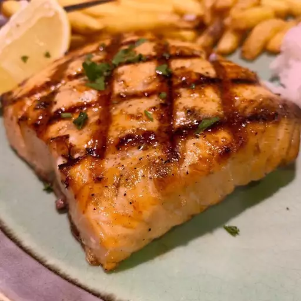
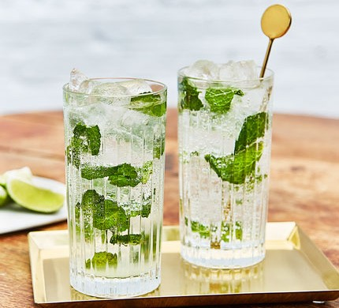
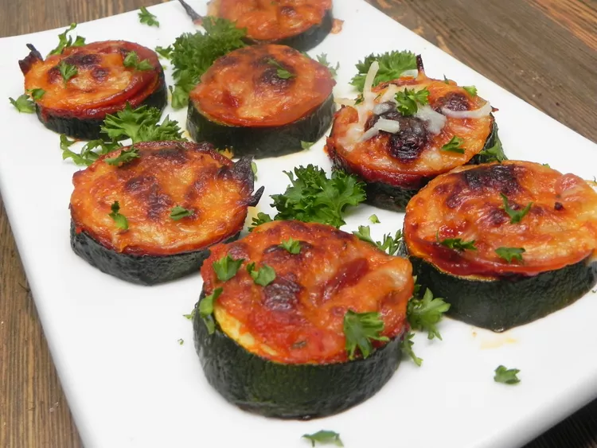

If you know how to make an omelet, you will be able to make this bacon, egg, and cheese breakfast sandwich. There's so little prep work required that breakfast will be done before you know it!
Air Fryer Waffle Egg in a Hole
10 min
Classic egg in a hole is made inside a waffle for a sweet, buttery flavor and added crunch.
Homemade Crispy Hash Browns
35 min
Good, old-fashioned, restaurant-style hash browns. Perfect with hot pepper sauce and ketchup!
Banana Pancakes
15 min
Crowd-pleasing banana pancakes made from scratch that are ready in minutes. A fun twist on ordinary pancakes.
Egg tortilla
9 min
Fry an egg, melt the cheese, and warm your tortilla all in the same pan. Add your favorite toppings–like salsa, jalapeño pepper slices, cilantro, and green onions–and enjoy a great tasting breakfast, done in a flash. Of course, you can repeat, as many times as you like, if you have company.
Strawberry Rhubarb Drop Biscuits
1 hour
These strawberry rhubarb drop biscuits are sweet with a scone-like texture — perfect for brunch. The technique is quick and easy and results in tender, moist, and delightfully fruity biscuits.
Lunch
Grilled Cheese Sandwich
15 min
Learn how to make a grilled cheese sandwich in a nonstick pan with buttered bread and American Cheddar for a classic hot sandwich.
Swiss Steak and Onion
6 hours 25 min
This delicious and easy Swiss steak crockpot recipe will have you out of the kitchen in under 20 minutes. I love to pair this with egg noodles or rice, being sure to get a good spoonful of sauce along with the steak. Feel free to add celery, green pepper, carrots, or your favorite vegetable to the slow cooker.
Buffalo Chicken Sandwich
6 hours 10 min
This crockpot Buffalo chicken is great for hearty sandwiches that will please those who love Buffalo chicken wings. This recipe is perfect for those days spent watching football. I like to top these with blue cheese or ranch dressing.
Pan-Fried Cube Steaks
15 min
Cube steak is a cut of meat from either the top round or the bottom round, that is run through the store's mechanical tenderizer. It is usually sold in individual portions, from 4-ounce up to 8-ounces each. Sometimes the cut is called minute steak, perhaps because it takes only minutes to prepare.

Grilled Salmon
2 hours
This grilled salmon tastes so good! A simple soy sauce and brown sugar marinade, with hints of lemon and garlic, are the perfect salty-sweet complement to rich salmon fillets. Even my 9-year-old loves this recipe!
Classic Goulash
35 min
This meaty goulash recipe is easy to make on the stovetop but can also be done in a slow cooker. Inspired by Paula Deen's Bobby's Goulash.
Dinner
Breaded Shrimp
25 min
An easy breaded shrimp recipe. A wonderful appetizer for a family dinner.
Maple and Brown Sugar Oatmeal
2 min
Maple and brown sugar oatmeal is super easy to make. I was tired of buying the packages, so I decided to experiment and this is it!
Chicken Marsala
30 min
Chicken Marsala is an Italian-style recipe for tender pan-fried chicken breasts in a sweet Marsala wine and mushroom sauce. It's super quick and easy to make for a weeknight dinner AND sophisticated enough for company.
Pesto Pasta
15 min
Pesto pasta is easy to make and full of flavor. It tastes good hot or cold!
Buttered Noodles
20 min
Saucy, buttered noodles are simple to make and perfect to serve either as-is or alongside steak, chicken, or meatballs. Butter, Parmesan cheese, salt, and pepper are all you need for this quick and easy, kid-friendly dish, although fresh herbs and a little lemon juice could be added to amp up the flavor.
Creamy Garlic Pasta
30 min
As far as creamy pasta recipes, this is the best I have ever had. Add prawns and/or scallops to make an amazing seafood Alfredo.
Salads
Green Goddess Salad
20 min
A simple romaine salad topped with classic green goddess dressing made with mayonnaise, parsley, spinach, basil, tarragon, and lemon juice.
Classic Caesar Salad
20 min
This Caesar salad is the same recipe we made at a very fancy restaurant while I was in college. The best part of the job was making tableside dishes, including this Caesar salad which is the best I've ever had.
Caprese Salad with Balsamic Reduction
25 min
This caprese salad with tomatoes, fresh mozzarella, and basil is drizzled with a sweet balsamic reduction and olive oil. Easy, impressive, and delicious!
Potato Salad
1 hour
This potato salad recipe is for the traditional creamy type of potato salad, with eggs, celery, and relish. It's perfect for making ahead to let the flavors develop.
Beet Salad with Goat Cheese
40 min
This delicious beet salad with creamy goat cheese, maple-candied walnuts, and a tangy orange and balsamic vinaigrette is a beautiful way to serve beets.
Russian Salad
50 min
This Russian salad recipe is what my mom and grandmother make every time there's a family gathering or a special occasion. Leave out the ham to make this a vegetarian dish. The potatoes, carrots, and eggs do not have to be completely chilled after boiling.
Drinks
Charred Lemon Paper Plane
10 min
Grilled lemon gives this amaro-based cocktail serious campfire vibes. Serve with a scorched citrus twist or go for the more traditional mini paper airplane garnish.
Apple Fall Spritz
5 min
Hard cider replaces prosecco in this fall-flavor spritz. To temper the bitterness, top with more club soda.

Mojito
10 min
This is an authentic recipe for mojito. I sized the recipe for one serving, but you can adjust it accordingly and make a pitcher full. It's a very refreshing drink for hot summer days.
Chocolate Cream Cold Brew
5 min
Ready in under 5 minutes, this chocolate foam cold brew tastes just like the one from that famous coffee house! And the best part is, it only costs a fraction of what that coffee house charges.
Spiked Lemonade
10 min
Homemade lemonade spiked with rum - the perfect tropical cooler on a hot day. Makes 1 large drink or 2 smaller ones.
Pineapple Margarita
5 min
This pineapple margarita gives a traditional margarita recipe a tropical twist! You can use Tajin instead of coarse salt to rim the glass. Use a good quality tequila for best results.
Desserts
Churro Cheesecake Bars
45 min
Churros meet cheesecake in these delicious churro cheesecake bars. Store-bought crescent dough is filled with a cinnamony cream cheese mixture and topped with cinnamon sugar. Serve with Mexican cajeta for extra caramel flavor.
Oreo Cheesecake Bars
4 hours 5 min
These oreo cheesecake bars are simply irresistible for everyone loving cookies and cream. They are surprisingly easy to make and are the perfect treat for lots of people.
Puff Pastry Cherry Crostata
45 min
This cherry crostata, or galette, is free-form and rustic with all the flavors of cherry pie but with a flaky, buttery, puff pastry crust.
Cherry Pie
2 hours 10 min
This cherry pie recipe is the 1999 American Pie Council's National Pie Championship first-place winner in the Fruit and Berry category.
Banana Cream Pie
3 hours 40 min
This banana cream pie is made with homemade pudding. It is one of the yummiest desserts on earth!
Pumpkin Custard Pie
50 min
This pumpkin custard pie has delicious flavor, thanks to caramelized pumpkin puree and fall spices. Baking the hot filling in a chilled crust produces a smooth and shiny, good-textured custard and a well-baked crust for this holiday dessert.
Appetizer/snacks
Campfire Queso
35 min
We tried the smoked queso trend from TikTok and stirred in taco-bar toppers. For a less indulgent, vegan take, try the stir-together salsa instead. It’s got everything but the meat and dairy.
Chicken nacho dip
1 hour 35 min
This crockpot chicken queso dip is my jazzed-up version of the classic queso dip made heartier with shredded chicken. Serve this crowd-pleasing dip with tortilla chips while watching the big game, or load up your slow cooker and take it to potlucks or tailgate parties.

Zucchini Pizza Bites
25 min
These cheesy zucchini pizza bites are an excellent replacement for pizza without the carbs — you won't even miss the crust! Season with your favorite herbs.
Bruschetta with Mozzarella
11 min
Some people call it bruschetta caprese–we simply call it delicious! This is a quick and easy appetizer with classic Italian flavors that’ll never let you down.
Fried Boursin Balls
35 min
Fried boursin cheese in a small bite-sized package! These fun appetizers are crunchy on the outside, with a delicious warm herby center.
Chicken-Stuffed Poblano Peppers
35 min
Smoky/earth poblanos do have a mild kick, and act as a tender yet sturdy base for this cheesy chicken filling. The beans and tomatoes bulk it up with more texture and flavor. The sharp cheddar adds a nice tang while the pepper jack is melty and spicy.